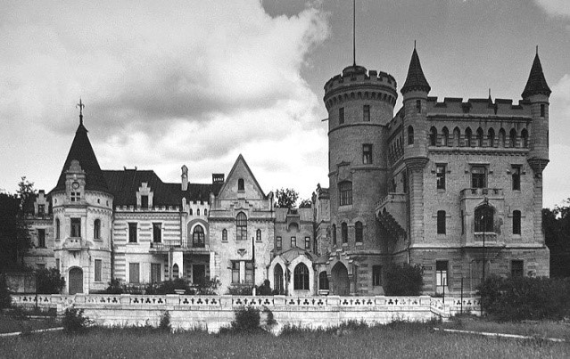

Живописная усадьба купца Алексея Михайловича Первушина, построенная им в 1873-1874 гг., достойна восхищения как лучшее архитектурное воплощение города Александрова. Усадьба состоит из главного дома в стиле неоклассицизма, флигеля, каретника, ограды с воротами и части парка. В начале ХХ века перестраивалась. Первым хозяином был Алексей Михайлович Первушин, ставший равноправным партнером известных фабрикантов Барановых, чьи фабрики выпускали, так называемые, «барановские ситцы». Близок он был и к семье Зубовых, из которой происходили коллекционеры, музыканты, учёные.
Особняк представляет собой двухэтажную постройку с кирпичным низом и деревянным верхом. Колонны, украшающие террасу и фасад, сделаны из дерева, хотя выглядят как каменные. На размах жизни владельцев указывают изысканные барельефы стен, ленты, гирлянды, а также небольшой бассейн в подвальном этаже. Усадьба была центром культурной и деловой жизни города.
Сейчас в здании усадьбы располагается Александровский художественный музей, созданный в 1989 г. Интерьеры усадьбы и коллекции рассказывают о быте провинциального купечества конца XIX – начала XX веков. Благодаря театрализованным программам в залах оживает атмосфера минувших столетий.
Адрес: г. Александров, ул. Советская, д. 16.
Режим работы: ежедневно с 09.00 до 17.00.
Старый особняк А.М. Первушина.

Крыльцо главного дома А.М. Первушина.
Особняк А.М. Первушина. Современный вид.
Особняк А.М. Первушина. Современный вид.